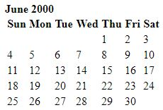

About
Joedem Vigmar B. Bongcayao Born June 08, 2000 is a student of University of Immaculate Conception (UIC), 2nd Year student under the course of BS in Information Technology. Living in Tigao, Cortes, Surigao del Sur. Who is still a novice on web designing field, so please bear with my skill
My Projects
- 
Birth Month
This is one of my creation, This activity represent as my birth month, This is just a plain birth month calender made with pure html.

Mark up
This is one of my creation, This activity is when we were only a new to the HTML that the teacher is teaching us the basic functions

VMG
This project is about my recitation of the Mission, Vision and Goal of the University of Immaculate Conception (UIC). Learning also on how to put a video and audio on a website
-

Testing CSS
In this activity the teacher gives us a task that will let us study the use of Cascading Style Sheet (CSS) through the link that he gives us.

Google
In this acitivity the teacher gives as an activity that duplicates the google this one really challenges my capabilities.

Page Tribute
This one is my tribute to my idol vocalist which is Adam Young and also the founder of the Owl city band.
-

Reregistration
Registration form this one, when the teacher gives us this activity i was having a trouble doing this because i was not in the class when the teacher teach us how to do this but luckily there was a tutorial that i followed.